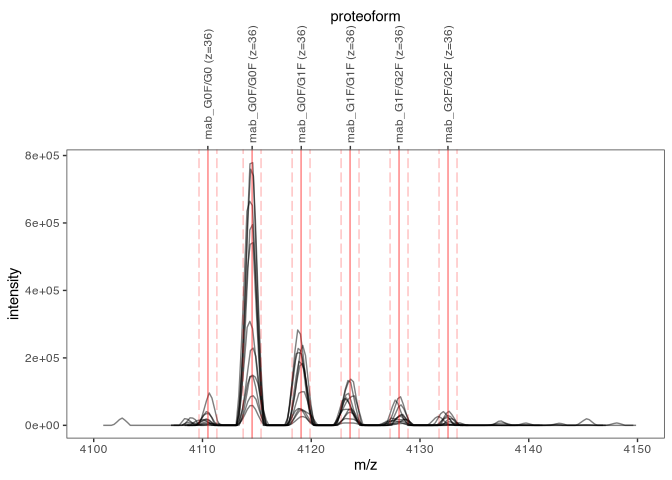
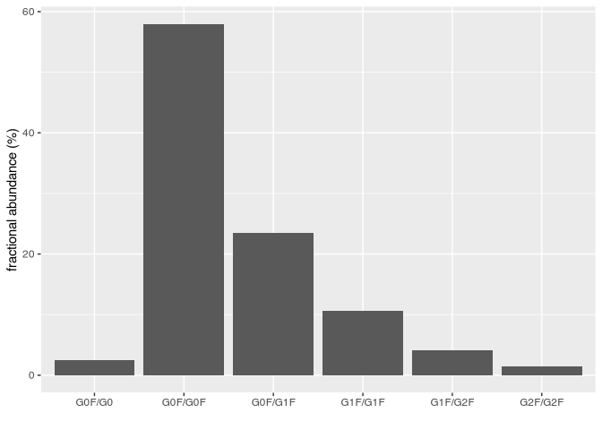

Overview
fragquaxi allows you to obtain fractional abundances of glycoforms (and proteoforms in general) from mass spectrometric (MS) data by quantification via XIC (extracted ion current) integration.
Usage
Load mass spectrometric data.
library(fragquaxi)
library(tibble)
library(dplyr)
library(tidyr)
library(ggplot2)
ms_data <- mzR::openMSfile(
system.file("extdata", "mzml", "mab1.mzML", package = "fragquaxi")
)Define proteoforms.
proteoforms <- tribble(
~name, ~Hex, ~HexNAc, ~Fuc,
"G0F/G0", 6, 8, 1,
"G0F/G0F", 6, 8, 2,
"G0F/G1F", 7, 8, 2,
"G1F/G1F", 8, 8, 2,
"G1F/G2F", 9, 8, 2,
"G2F/G2F", 10, 8, 2,
)Calculate mass-to-charge ratios of proteoform ions in charge states 33+ to 40+
pfm_ions <-
proteoforms %>%
calculate_proteoform_masses("C6464 H9950 N1706 O2014 S44") %>%
ionize(charge_states = 33L:40L)
pfm_ions
#> # A tibble: 48 x 9
#> name Hex HexNAc Fuc mass z mz mz_min mz_max
#> <chr> <dbl> <dbl> <dbl> <dbl> <int> <dbl> <dbl> <dbl>
#> 1 G0F/G0 6 8 1 147942. 33 4484. 4483. 4485.
#> 2 G0F/G0 6 8 1 147942. 34 4352. 4351. 4353.
#> 3 G0F/G0 6 8 1 147942. 35 4228. 4227. 4229.
#> 4 G0F/G0 6 8 1 147942. 36 4111. 4110. 4111.
#> 5 G0F/G0 6 8 1 147942. 37 3999. 3999. 4000.
#> 6 G0F/G0 6 8 1 147942. 38 3894. 3893. 3895.
#> 7 G0F/G0 6 8 1 147942. 39 3794. 3794. 3795.
#> 8 G0F/G0 6 8 1 147942. 40 3700. 3699. 3700.
#> 9 G0F/G0F 6 8 2 148088. 33 4489. 4488. 4489.
#> 10 G0F/G0F 6 8 2 148088. 34 4357. 4356. 4357.
#> # … with 38 more rowsPlot these ions (here, only charge state 36+ of scans 126 to 136).

Quantify these ions via XIC integration.
abundances <- quantify_ions(
ms_data,
pfm_ions,
rt_min = 300,
rt_max = 350
)
abundances
#> ℹ Abundances of 48 ions quantified in 352 mass spectra using 1
#> retention time window by `fragquaxi::quantify_ions()`.
#>
#> ── Parameters ────────────────────────────────────────────────────────────────────────────────────────────────────────
#> ● MS data file: /home/wolfgang/Programme/R/3.6/fragquaxi/extdata/mzml/mab1.mzML
#> ● Ions:
#> # A tibble: 48 x 10
#> ion_id name Hex HexNAc Fuc mass z mz mz_min mz_max
#> <chr> <chr> <dbl> <dbl> <dbl> <dbl> <int> <dbl> <dbl> <dbl>
#> 1 id_1 G0F/G0 6 8 1 147942. 33 4484. 4483. 4485.
#> 2 id_2 G0F/G0 6 8 1 147942. 34 4352. 4351. 4353.
#> 3 id_3 G0F/G0 6 8 1 147942. 35 4228. 4227. 4229.
#> 4 id_4 G0F/G0 6 8 1 147942. 36 4111. 4110. 4111.
#> 5 id_5 G0F/G0 6 8 1 147942. 37 3999. 3999. 4000.
#> # … with 43 more rows
#> ● Retention time limits:
#> # A tibble: 1 x 2
#> rt_min rt_max
#> <dbl> <dbl>
#> 1 300 350
#>
#> ── Results ───────────────────────────────────────────────────────────────────────────────────────────────────────────
#> # A tibble: 1 x 50
#> rt_min rt_max id_1 id_2 id_3 id_4 id_5 id_6 id_7 id_8 id_9
#> <dbl> <dbl> <dbl> <dbl> <dbl> <dbl> <dbl> <dbl> <dbl> <dbl> <dbl>
#> 1 300 350 1.54e5 2.05e5 2.57e5 3.34e5 1.84e5 1.77e5 1.21e5 1.14e5 2.90e6
#> # … with 39 more variables: id_10 <dbl>, id_11 <dbl>, id_12 <dbl>, id_13 <dbl>,
#> # id_14 <dbl>, …Plot abundances.
abundances %>%
as_tibble() %>%
unnest(abundance_data) %>%
group_by(name) %>%
summarise(abundance = sum(abundance)) %>%
mutate(frac_ab = abundance / sum(abundance) * 100) %>%
ggplot(aes(name, frac_ab)) +
geom_col() +
xlab("") +
ylab("fractional abundance (%)")